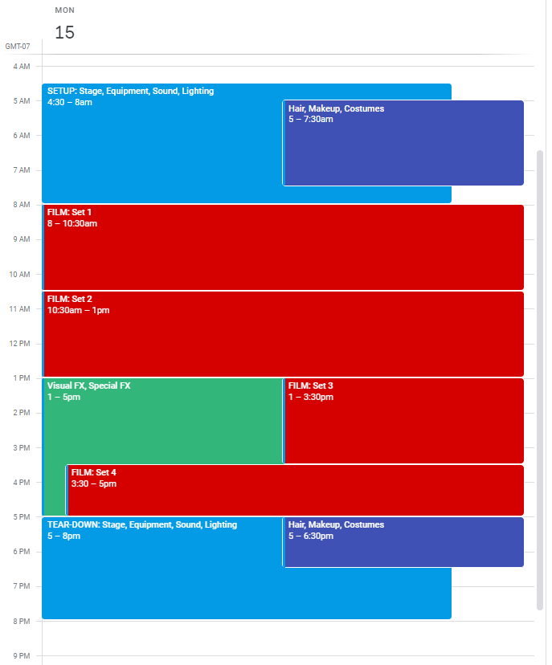

Movie Production Minutes
Check-ins
Sunday, April 14th 2024
Attendees
Director's Staff and the Leading Production Department staff
- Director
- Producer
- Production Manager
- First Assistent Director
Absent List: Second Assistent Director
Agenda
Call to meeting: Film starts on Monday April 15th 2024, cover logistics with the production department
- Finalize items from previous meeting minutes
- Reports and Updates
- Finalize and send production schedule
Quote of the Day: Come Prepared and Ready to Make a Movie!
Unfinished Items from Previous Meeting: Friday, April 12th 2024
Discussion
Final review of Call Sheet Day 1 (4/15) outlining who needs to be where and when
No issues or concerns, sent to Monday's on-set crew
Report and Updates
Director's Report
Firstly, Powell reported that our budget is covered; All funding and investments from Warner Bro's has been secured as of last week.
Secondly, the Director's staff will meet with cast prior to filming on Monday morning. It is very important to know each other for team building and it will be easy for the cast to cooperate well on set.
Lastly, we will increase the frequency of these Production Department to every two weeks. This will help the Director's staff align with the efforts of the production deparment to ensure that the movie is on track. Additionally, Powell has arranged quarterly meetings with Warner Bro board to report the status of the filming, and discuss any problems or issues that concern the studio. These quarterly meetings start in June and this staff is expected to attend.
Producer's Report
Firstly, Kiera has confirmed that the Art Department is ready for production, she has received confirmation from the following teams: hair/makeup, costumes, set dressers, set decorations, and construction
Secondly, we are using Warner Bro's new technologies for Visual FX and Special FX graphics. The staff is trained with the new equipment and will be ready to film.
Lastly, Kiera has received confirmation that the marketing team will join the starff after Quarter 1 of filming. By this time, we will have film content ready for marketing, trailers, etc, and Kiera can begin coordinating publicity efforts and interviews.
Dependencies
Camera and lighting crews still pending stock footage from Warner Bros, expected delivery on Sunday night. This could delay set-up production by several hours on Monday morning. Studio manager has personal backups from another project if needed.
Monday's Production Schedule
Additional Notes
Everyone should prepare relevant stands for their content ideas and it should be present at the next meeting so the team can finalize the best business for the film
Action Items
- The team has finalized all logistics
- Our next meeting is going to hold on Tuesday, April 30th 2024, at Studio CTL 0125, at 5PM